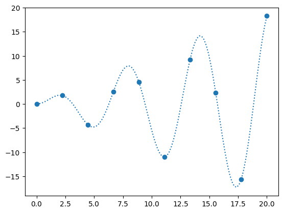
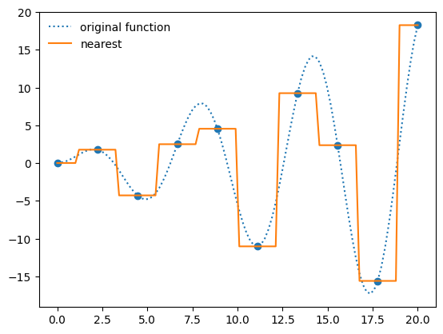
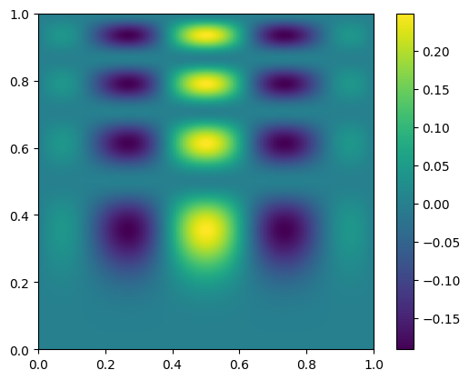
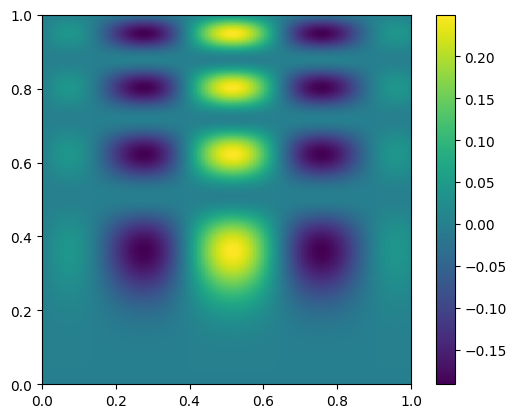
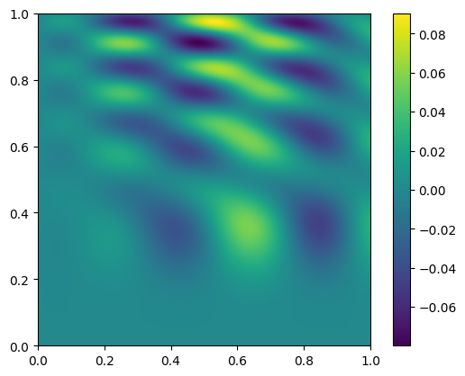
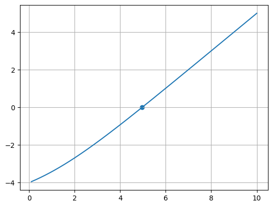
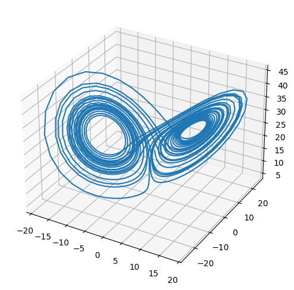
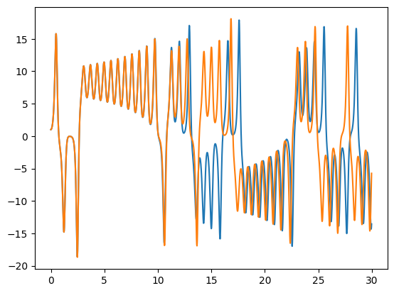
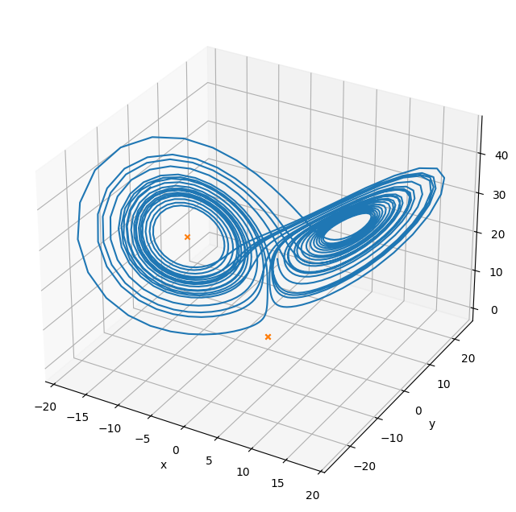
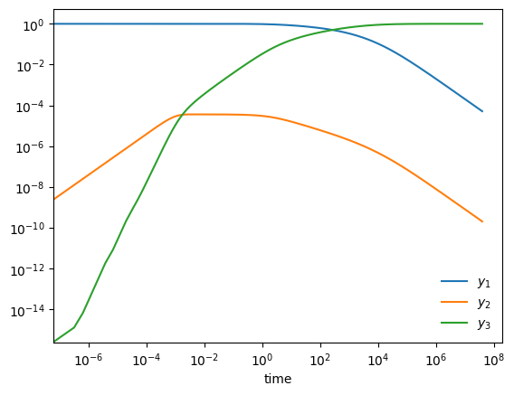

SciPy#
SciPy is a collection of numerical algorithms with python interfaces. In many cases, these interfaces are wrappers around standard numerical libraries that have been developed in the community and are used with other languages. Usually detailed references are available to explain the implementation.
Note
There are many subpackages generally, you load the subpackages separately, e.g.
from scipy import linalg, optimize
then you have access to the methods in those namespaces
Important
One thing to keep in mind—all numerical methods have strengths and weaknesses, and make assumptions. You should always do some research into the method to understand what it is doing.
Tip
It is also always a good idea to run a new method on some test where you know the answer, to make sure it is behaving as expected.
import numpy as np
import matplotlib.pyplot as plt
Integration#
we’ll do some integrals of the form
We can imagine two situations:
our function \(f(x)\) is given by an analytic expression. This gives us the freedom to pick our integration points, and in general can allow us to optimize our result and get high accuracy
our function \(f(x)\) is defined on at a set of (possibly regular spaced) points.
Note
In numerical analysis, the term quadrature is used to describe any integration method that represents the integral as the weighted sum of a discrete number of points.
from scipy import integrate
#help(integrate)
Let’s consider integrating
quad() is the basic integrator for a general (not sampled) function. It uses a general-interface from the Fortran package QUADPACK (QAGS or QAGI). It will return the integral in an interval and an estimate of the error in the approximation
def f(x):
return np.sin(x)**2
help(integrate.quad)
Help on function quad in module scipy.integrate._quadpack_py:
quad(
func,
a,
b,
args=(),
full_output=0,
epsabs=1.49e-08,
epsrel=1.49e-08,
limit=50,
points=None,
weight=None,
wvar=None,
wopts=None,
maxp1=50,
limlst=50,
complex_func=False
)
Compute a definite integral.
Integrate func from `a` to `b` (possibly infinite interval) using a
technique from the Fortran library QUADPACK.
Parameters
----------
func : {function, scipy.LowLevelCallable}
A Python function or method to integrate. If `func` takes many
arguments, it is integrated along the axis corresponding to the
first argument.
If the user desires improved integration performance, then `f` may
be a `scipy.LowLevelCallable` with one of the signatures::
double func(double x)
double func(double x, void *user_data)
double func(int n, double *xx)
double func(int n, double *xx, void *user_data)
The ``user_data`` is the data contained in the `scipy.LowLevelCallable`.
In the call forms with ``xx``, ``n`` is the length of the ``xx``
array which contains ``xx[0] == x`` and the rest of the items are
numbers contained in the ``args`` argument of quad.
In addition, certain ctypes call signatures are supported for
backward compatibility, but those should not be used in new code.
a : float
Lower limit of integration (use -numpy.inf for -infinity).
b : float
Upper limit of integration (use numpy.inf for +infinity).
args : tuple, optional
Extra arguments to pass to `func`.
full_output : int, optional
Non-zero to return a dictionary of integration information.
If non-zero, warning messages are also suppressed and the
message is appended to the output tuple.
complex_func : bool, optional
Indicate if the function's (`func`) return type is real
(``complex_func=False``: default) or complex (``complex_func=True``).
In both cases, the function's argument is real.
If full_output is also non-zero, the `infodict`, `message`, and
`explain` for the real and complex components are returned in
a dictionary with keys "real output" and "imag output".
Returns
-------
y : float
The integral of func from `a` to `b`.
abserr : float
An estimate of the absolute error in the result.
infodict : dict
A dictionary containing additional information.
message
A convergence message.
explain
Appended only with 'cos' or 'sin' weighting and infinite
integration limits, it contains an explanation of the codes in
infodict['ierlst']
Other Parameters
----------------
epsabs : float or int, optional
Absolute error tolerance. Default is 1.49e-8. `quad` tries to obtain
an accuracy of ``abs(i-result) <= max(epsabs, epsrel*abs(i))``
where ``i`` = integral of `func` from `a` to `b`, and ``result`` is the
numerical approximation. See `epsrel` below.
epsrel : float or int, optional
Relative error tolerance. Default is 1.49e-8.
If ``epsabs <= 0``, `epsrel` must be greater than both 5e-29
and ``50 * (machine epsilon)``. See `epsabs` above.
limit : float or int, optional
An upper bound on the number of subintervals used in the adaptive
algorithm.
points : (sequence of floats,ints), optional
A sequence of break points in the bounded integration interval
where local difficulties of the integrand may occur (e.g.,
singularities, discontinuities). The sequence does not have
to be sorted. Note that this option cannot be used in conjunction
with ``weight``.
weight : float or int, optional
String indicating weighting function. Full explanation for this
and the remaining arguments can be found below.
wvar : optional
Variables for use with weighting functions.
wopts : optional
Optional input for reusing Chebyshev moments.
maxp1 : float or int, optional
An upper bound on the number of Chebyshev moments.
limlst : int, optional
Upper bound on the number of cycles (>=3) for use with a sinusoidal
weighting and an infinite end-point.
See Also
--------
:func:`dblquad`
double integral
:func:`tplquad`
triple integral
:func:`nquad`
n-dimensional integrals (uses `quad` recursively)
:func:`fixed_quad`
fixed-order Gaussian quadrature
:func:`simpson`
integrator for sampled data
:func:`romb`
integrator for sampled data
:func:`scipy.special`
for coefficients and roots of orthogonal polynomials
Notes
-----
For valid results, the integral must converge; behavior for divergent
integrals is not guaranteed.
**Extra information for quad() inputs and outputs**
If full_output is non-zero, then the third output argument
(infodict) is a dictionary with entries as tabulated below. For
infinite limits, the range is transformed to (0,1) and the
optional outputs are given with respect to this transformed range.
Let M be the input argument limit and let K be infodict['last'].
The entries are:
'neval'
The number of function evaluations.
'last'
The number, K, of subintervals produced in the subdivision process.
'alist'
A rank-1 array of length M, the first K elements of which are the
left end points of the subintervals in the partition of the
integration range.
'blist'
A rank-1 array of length M, the first K elements of which are the
right end points of the subintervals.
'rlist'
A rank-1 array of length M, the first K elements of which are the
integral approximations on the subintervals.
'elist'
A rank-1 array of length M, the first K elements of which are the
moduli of the absolute error estimates on the subintervals.
'iord'
A rank-1 integer array of length M, the first L elements of
which are pointers to the error estimates over the subintervals
with ``L=K`` if ``K<=M/2+2`` or ``L=M+1-K`` otherwise. Let I be the
sequence ``infodict['iord']`` and let E be the sequence
``infodict['elist']``. Then ``E[I[1]], ..., E[I[L]]`` forms a
decreasing sequence.
If the input argument points is provided (i.e., it is not None),
the following additional outputs are placed in the output
dictionary. Assume the points sequence is of length P.
'pts'
A rank-1 array of length P+2 containing the integration limits
and the break points of the intervals in ascending order.
This is an array giving the subintervals over which integration
will occur.
'level'
A rank-1 integer array of length M (=limit), containing the
subdivision levels of the subintervals, i.e., if (aa,bb) is a
subinterval of ``(pts[1], pts[2])`` where ``pts[0]`` and ``pts[2]``
are adjacent elements of ``infodict['pts']``, then (aa,bb) has level l
if ``|bb-aa| = |pts[2]-pts[1]| * 2**(-l)``.
'ndin'
A rank-1 integer array of length P+2. After the first integration
over the intervals (pts[1], pts[2]), the error estimates over some
of the intervals may have been increased artificially in order to
put their subdivision forward. This array has ones in slots
corresponding to the subintervals for which this happens.
**Weighting the integrand**
The input variables, *weight* and *wvar*, are used to weight the
integrand by a select list of functions. Different integration
methods are used to compute the integral with these weighting
functions, and these do not support specifying break points. The
possible values of weight and the corresponding weighting functions are.
========== =================================== =====================
``weight`` Weight function used ``wvar``
========== =================================== =====================
'cos' cos(w*x) wvar = w
'sin' sin(w*x) wvar = w
'alg' g(x) = ((x-a)**alpha)*((b-x)**beta) wvar = (alpha, beta)
'alg-loga' g(x)*log(x-a) wvar = (alpha, beta)
'alg-logb' g(x)*log(b-x) wvar = (alpha, beta)
'alg-log' g(x)*log(x-a)*log(b-x) wvar = (alpha, beta)
'cauchy' 1/(x-c) wvar = c
========== =================================== =====================
wvar holds the parameter w, (alpha, beta), or c depending on the weight
selected. In these expressions, a and b are the integration limits.
For the 'cos' and 'sin' weighting, additional inputs and outputs are
available.
For weighted integrals with finite integration limits, the integration
is performed using a Clenshaw-Curtis method, which uses Chebyshev moments.
For repeated calculations, these moments are saved in the output dictionary:
'momcom'
The maximum level of Chebyshev moments that have been computed,
i.e., if ``M_c`` is ``infodict['momcom']`` then the moments have been
computed for intervals of length ``|b-a| * 2**(-l)``,
``l=0,1,...,M_c``.
'nnlog'
A rank-1 integer array of length M(=limit), containing the
subdivision levels of the subintervals, i.e., an element of this
array is equal to l if the corresponding subinterval is
``|b-a|* 2**(-l)``.
'chebmo'
A rank-2 array of shape (25, maxp1) containing the computed
Chebyshev moments. These can be passed on to an integration
over the same interval by passing this array as the second
element of the sequence wopts and passing infodict['momcom'] as
the first element.
If one of the integration limits is infinite, then a Fourier integral is
computed (assuming w neq 0). If full_output is 1 and a numerical error
is encountered, besides the error message attached to the output tuple,
a dictionary is also appended to the output tuple which translates the
error codes in the array ``info['ierlst']`` to English messages. The
output information dictionary contains the following entries instead of
'last', 'alist', 'blist', 'rlist', and 'elist':
'lst'
The number of subintervals needed for the integration (call it ``K_f``).
'rslst'
A rank-1 array of length M_f=limlst, whose first ``K_f`` elements
contain the integral contribution over the interval
``(a+(k-1)c, a+kc)`` where ``c = (2*floor(|w|) + 1) * pi / |w|``
and ``k=1,2,...,K_f``.
'erlst'
A rank-1 array of length ``M_f`` containing the error estimate
corresponding to the interval in the same position in
``infodict['rslist']``.
'ierlst'
A rank-1 integer array of length ``M_f`` containing an error flag
corresponding to the interval in the same position in
``infodict['rslist']``. See the explanation dictionary (last entry
in the output tuple) for the meaning of the codes.
**Details of QUADPACK level routines**
`quad` calls routines from the FORTRAN library QUADPACK. This section
provides details on the conditions for each routine to be called and a
short description of each routine. The routine called depends on
`weight`, `points` and the integration limits `a` and `b`.
================ ============== ========== =====================
QUADPACK routine `weight` `points` infinite bounds
================ ============== ========== =====================
qagse None No No
qagie None No Yes
qagpe None Yes No
qawoe 'sin', 'cos' No No
qawfe 'sin', 'cos' No either `a` or `b`
qawse 'alg*' No No
qawce 'cauchy' No No
================ ============== ========== =====================
The following provides a short description from [1]_ for each
routine.
qagse
is an integrator based on globally adaptive interval
subdivision in connection with extrapolation, which will
eliminate the effects of integrand singularities of
several types. The integration is performed using a 21-point Gauss-Kronrod
quadrature within each subinterval.
qagie
handles integration over infinite intervals. The infinite range is
mapped onto a finite interval and subsequently the same strategy as
in ``QAGS`` is applied.
qagpe
serves the same purposes as QAGS, but also allows the
user to provide explicit information about the location
and type of trouble-spots i.e. the abscissae of internal
singularities, discontinuities and other difficulties of
the integrand function.
qawoe
is an integrator for the evaluation of
:math:`\int^b_a \cos(\omega x)f(x)dx` or
:math:`\int^b_a \sin(\omega x)f(x)dx`
over a finite interval [a,b], where :math:`\omega` and :math:`f`
are specified by the user. The rule evaluation component is based
on the modified Clenshaw-Curtis technique
An adaptive subdivision scheme is used in connection
with an extrapolation procedure, which is a modification
of that in ``QAGS`` and allows the algorithm to deal with
singularities in :math:`f(x)`.
qawfe
calculates the Fourier transform
:math:`\int^\infty_a \cos(\omega x)f(x)dx` or
:math:`\int^\infty_a \sin(\omega x)f(x)dx`
for user-provided :math:`\omega` and :math:`f`. The procedure of
``QAWO`` is applied on successive finite intervals, and convergence
acceleration by means of the :math:`\varepsilon`-algorithm is applied
to the series of integral approximations.
qawse
approximate :math:`\int^b_a w(x)f(x)dx`, with :math:`a < b` where
:math:`w(x) = (x-a)^{\alpha}(b-x)^{\beta}v(x)` with
:math:`\alpha,\beta > -1`, where :math:`v(x)` may be one of the
following functions: :math:`1`, :math:`\log(x-a)`, :math:`\log(b-x)`,
:math:`\log(x-a)\log(b-x)`.
The user specifies :math:`\alpha`, :math:`\beta` and the type of the
function :math:`v`. A globally adaptive subdivision strategy is
applied, with modified Clenshaw-Curtis integration on those
subintervals which contain `a` or `b`.
qawce
compute :math:`\int^b_a f(x) / (x-c)dx` where the integral must be
interpreted as a Cauchy principal value integral, for user specified
:math:`c` and :math:`f`. The strategy is globally adaptive. Modified
Clenshaw-Curtis integration is used on those intervals containing the
point :math:`x = c`.
**Integration of Complex Function of a Real Variable**
A complex valued function, :math:`f`, of a real variable can be written as
:math:`f = g + ih`. Similarly, the integral of :math:`f` can be
written as
.. math::
\int_a^b f(x) dx = \int_a^b g(x) dx + i\int_a^b h(x) dx
assuming that the integrals of :math:`g` and :math:`h` exist
over the interval :math:`[a,b]` [2]_. Therefore, ``quad`` integrates
complex-valued functions by integrating the real and imaginary components
separately.
**Array API Standard Support**
`quad` has experimental support for Python Array API Standard compatible
backends in addition to NumPy. Please consider testing these features
by setting an environment variable ``SCIPY_ARRAY_API=1`` and providing
CuPy, PyTorch, JAX, or Dask arrays as array arguments. The following
combinations of backend and device (or other capability) are supported.
==================== ==================== ====================
Library CPU GPU
==================== ==================== ====================
NumPy ✅ n/a
CuPy n/a ⛔
PyTorch ⛔ ⛔
JAX ⛔ ⛔
Dask ⛔ n/a
==================== ==================== ====================
See :ref:`dev-arrayapi` for more information.
References
----------
.. [1] Piessens, Robert; de Doncker-Kapenga, Elise;
Überhuber, Christoph W.; Kahaner, David (1983).
QUADPACK: A subroutine package for automatic integration.
Springer-Verlag.
ISBN 978-3-540-12553-2.
.. [2] McCullough, Thomas; Phillips, Keith (1973).
Foundations of Analysis in the Complex Plane.
Holt Rinehart Winston.
ISBN 0-03-086370-8
Examples
--------
Calculate :math:`\int^4_0 x^2 dx` and compare with an analytic result
>>> from scipy import integrate
>>> import numpy as np
>>> x2 = lambda x: x**2
>>> integrate.quad(x2, 0, 4)
(21.333333333333332, 2.3684757858670003e-13)
>>> print(4**3 / 3.) # analytical result
21.3333333333
Calculate :math:`\int^\infty_0 e^{-x} dx`
>>> invexp = lambda x: np.exp(-x)
>>> integrate.quad(invexp, 0, np.inf)
(1.0, 5.842605999138044e-11)
Calculate :math:`\int^1_0 a x \,dx` for :math:`a = 1, 3`
>>> f = lambda x, a: a*x
>>> y, err = integrate.quad(f, 0, 1, args=(1,))
>>> y
0.5
>>> y, err = integrate.quad(f, 0, 1, args=(3,))
>>> y
1.5
Calculate :math:`\int^1_0 x^2 + y^2 dx` with ctypes, holding
y parameter as 1::
testlib.c =>
double func(int n, double args[n]){
return args[0]*args[0] + args[1]*args[1];}
compile to library testlib.*
::
from scipy import integrate
import ctypes
lib = ctypes.CDLL('/home/.../testlib.*') #use absolute path
lib.func.restype = ctypes.c_double
lib.func.argtypes = (ctypes.c_int,ctypes.c_double)
integrate.quad(lib.func,0,1,(1))
#(1.3333333333333333, 1.4802973661668752e-14)
print((1.0**3/3.0 + 1.0) - (0.0**3/3.0 + 0.0)) #Analytic result
# 1.3333333333333333
Be aware that pulse shapes and other sharp features as compared to the
size of the integration interval may not be integrated correctly using
this method. A simplified example of this limitation is integrating a
y-axis reflected step function with many zero values within the integrals
bounds.
>>> y = lambda x: 1 if x<=0 else 0
>>> integrate.quad(y, -1, 1)
(1.0, 1.1102230246251565e-14)
>>> integrate.quad(y, -1, 100)
(1.0000000002199108, 1.0189464580163188e-08)
>>> integrate.quad(y, -1, 10000)
(0.0, 0.0)
quad will return the integral and an estimate of the error. We can seek more accuracy by setting epsabs and epsrel,
but remember that we can’t do better than roundoff error.
I, err = integrate.quad(f, 0.0, 2.0*np.pi, epsabs=1.e-16, epsrel=1.e-16)
print(I)
print(err)
3.141592653589793
3.4878684980086318e-15
/tmp/ipykernel_3022/932417219.py:1: IntegrationWarning: The occurrence of roundoff error is detected, which prevents
the requested tolerance from being achieved. The error may be
underestimated.
I, err = integrate.quad(f, 0.0, 2.0*np.pi, epsabs=1.e-16, epsrel=1.e-16)
#help(integrate.quad)
Additional arguments#
Sometimes our integrand function takes optional arguments. Let’s consider integrating
now we want to be able to define the amplitude, \(A\), and width, \(\sigma\) as part of the function.
def g(x, A, sigma):
return A*np.exp(-x**2/sigma**2)
I, err = integrate.quad(g, -1.0, 1.0, args=(1.0, 2.0))
print(I, err)
1.8451240256511698 2.0484991765669867e-14
Integrating to infinity#
numpy defines the inf quantity which can be used in the integration limits. We can integrate a Gaussian over \([-\infty, \infty]\) (we know the answer
is \(\sqrt{\pi}\)).
Note
Behind the scenes, what the integration function does is do a variable transform like: \(t = x/(c +x)\). This works when one limit is \(\infty\), giving, e.g.,
I, err = integrate.quad(g, -np.inf, np.inf, args=(1.0, 1.0))
print(I, err)
1.7724538509055159 1.4202636780944923e-08
Multidimensional integrals#
Multidimensional integration can be done with successive calls to quad(), but there are wrappers that help
Let’s compute
(this example comes from the SciPy tutorial)
Notice that the limits of integration in \(x\) depend on \(y\). This means that we need to do the \(x\) integration first, which gives:
Note the form of the function:
dblquad(f, a, b, xlo, xhi)
where f = f(y, x) – the y argument is first to indicate that the \(y\) integration is done first and
then the \(x\) and \([a, b]\) are the limits of the \(x\) integration. We want the opposite in this example,
so we’ll switch the meaning of \(x\) and \(y\) in our example below.
The integral will be from: \(y = [0, 1/2]\), and \(x\) = xlo(y), \(x\) = xhi(y)
def integrand(x, y):
return x*y
def x_lower_lim(y):
return 0
def x_upper_lim(y):
return 1-2*y
# we change the definitions of x and y in this call
I, err = integrate.dblquad(integrand, 0.0, 0.5, x_lower_lim, x_upper_lim)
print(I, 1.0/I)
0.010416666666666668 95.99999999999999
If you remember the python lambda functions (one expression functions), you can do this more compactly:
I, err = integrate.dblquad(lambda x, y: x*y, 0.0, 0.5, lambda y: 0, lambda y: 1-2*y)
print(I)
0.010416666666666668
Integration of a sampled function#
Here we integrate a function that is defined only at a sequence of points. A popular method is Simpson’s rule which fits a parabola to 3 consecutive points and integrates under the parabola.
Let’s compute
with \(x_i = 0, \ldots, 2\pi\) defined at \(N\) points
N = 17
x = np.linspace(0.0, 2.0*np.pi, N, endpoint=True)
y = np.sin(x)**2
I = integrate.simpson(y, x=x)
print(I)
3.141592653589793
Romberg integration is specific to equally-spaced samples, where \(N = 2^k + 1\) and can be more converge faster (it uses extrapolation of coarser integration results to achieve higher accuracy)
N = 17
x = np.linspace(0.0, 2.0*np.pi, N, endpoint=True)
y = np.sin(x)**2
I = integrate.romb(y, dx=x[1]-x[0])
print(I)
3.1430658353300385
Interpolation#
Interpolation fills in the gaps between a discrete number of points by making an assumption about the behavior of the functional form of the data.
Many different types of interpolation exist
some ensure no new extrema are introduced
some conserve the quantity being interpolated
some match derivative at end points
Caution
Pathologies exist—it is not always best to use a high-order polynomial to pass through all of the points in your dataset.
The interp1d() function allows for a variety of 1-d interpolation methods. It returns an object that acts as a function, which can be evaluated at any point.
import scipy.interpolate as interpolate
#help(interpolate.interp1d)
Let’s sample
and try to interpolate it.
def f_exact(x):
return np.sin(x)*x
N = 10
x = np.linspace(0, 20, N)
y = f_exact(x)
fig, ax = plt.subplots()
x_fine = np.linspace(0, 20, 10*N)
ax.scatter(x, y)
ax.plot(x_fine, f_exact(x_fine), ls=":", label="original function")
[<matplotlib.lines.Line2D at 0x7efed95292b0>]

When we create an interpolant via interp1d, it creates a function object
help(interpolate.interp1d)
Help on class interp1d in module scipy.interpolate._interpolate:
class interp1d(scipy.interpolate._polyint._Interpolator1D)
| interp1d(
| x,
| y,
| kind='linear',
| axis=-1,
| copy=True,
| bounds_error=None,
| fill_value=nan,
| assume_sorted=False
| )
|
| Interpolate a 1-D function (legacy).
|
| .. legacy:: class
|
| For a guide to the intended replacements for `interp1d` see
| :ref:`tutorial-interpolate_1Dsection`.
|
| `x` and `y` are arrays of values used to approximate some function f:
| ``y = f(x)``. This class returns a function whose call method uses
| interpolation to find the value of new points.
|
| Parameters
| ----------
| x : (npoints, ) array_like
| A 1-D array of real values.
| y : (..., npoints, ...) array_like
| An N-D array of real values. The length of `y` along the interpolation
| axis must be equal to the length of `x`. Use the ``axis`` parameter
| to select correct axis. Unlike other interpolators, the default
| interpolation axis is the last axis of `y`.
| kind : str or int, optional
| Specifies the kind of interpolation as a string or as an integer
| specifying the order of the spline interpolator to use.
| The string has to be one of 'linear', 'nearest', 'nearest-up', 'zero',
| 'slinear', 'quadratic', 'cubic', 'previous', or 'next'. 'zero',
| 'slinear', 'quadratic' and 'cubic' refer to a spline interpolation of
| zeroth, first, second or third order; 'previous' and 'next' simply
| return the previous or next value of the point; 'nearest-up' and
| 'nearest' differ when interpolating half-integers (e.g. 0.5, 1.5)
| in that 'nearest-up' rounds up and 'nearest' rounds down. Default
| is 'linear'.
| axis : int, optional
| Axis in the ``y`` array corresponding to the x-coordinate values. Unlike
| other interpolators, defaults to ``axis=-1``.
| copy : bool, optional
| If ``True``, the class makes internal copies of x and y. If ``False``,
| references to ``x`` and ``y`` are used if possible. The default is to copy.
| bounds_error : bool, optional
| If True, a ValueError is raised any time interpolation is attempted on
| a value outside of the range of x (where extrapolation is
| necessary). If False, out of bounds values are assigned `fill_value`.
| By default, an error is raised unless ``fill_value="extrapolate"``.
| fill_value : array-like or (array-like, array_like) or "extrapolate", optional
| - if a ndarray (or float), this value will be used to fill in for
| requested points outside of the data range. If not provided, then
| the default is NaN. The array-like must broadcast properly to the
| dimensions of the non-interpolation axes.
| - If a two-element tuple, then the first element is used as a
| fill value for ``x_new < x[0]`` and the second element is used for
| ``x_new > x[-1]``. Anything that is not a 2-element tuple (e.g.,
| list or ndarray, regardless of shape) is taken to be a single
| array-like argument meant to be used for both bounds as
| ``below, above = fill_value, fill_value``. Using a two-element tuple
| or ndarray requires ``bounds_error=False``.
|
| .. versionadded:: 0.17.0
| - If "extrapolate", then points outside the data range will be
| extrapolated.
|
| .. versionadded:: 0.17.0
| assume_sorted : bool, optional
| If False, values of `x` can be in any order and they are sorted first.
| If True, `x` has to be an array of monotonically increasing values.
|
| Attributes
| ----------
| fill_value
|
| Methods
| -------
| __call__
|
| See Also
| --------
|
| :func:`splrep`, :func:`splev`
| Spline interpolation/smoothing based on FITPACK.
| :func:`UnivariateSpline`
| An object-oriented wrapper of the FITPACK routines.
| :func:`interp2d`
| 2-D interpolation
|
|
| Notes
| -----
| Calling `interp1d` with NaNs present in input values results in
| undefined behaviour.
|
| Input values `x` and `y` must be convertible to `float` values like
| `int` or `float`.
|
| If the values in `x` are not unique, the resulting behavior is
| undefined and specific to the choice of `kind`, i.e., changing
| `kind` will change the behavior for duplicates.
|
| **Array API Standard Support**
|
| `interp1d` is not in-scope for support of Python Array API Standard compatible
| backends other than NumPy.
|
| See :ref:`dev-arrayapi` for more information.
|
|
| Examples
| --------
| >>> import numpy as np
| >>> import matplotlib.pyplot as plt
| >>> from scipy import interpolate
| >>> x = np.arange(0, 10)
| >>> y = np.exp(-x/3.0)
| >>> f = interpolate.interp1d(x, y)
|
| >>> xnew = np.arange(0, 9, 0.1)
| >>> ynew = f(xnew) # use interpolation function returned by `interp1d`
| >>> plt.plot(x, y, 'o', xnew, ynew, '-')
| >>> plt.show()
|
| Method resolution order:
| interp1d
| scipy.interpolate._polyint._Interpolator1D
| builtins.object
|
| Methods defined here:
|
| __init__(
| self,
| x,
| y,
| kind='linear',
| axis=-1,
| copy=True,
| bounds_error=None,
| fill_value=nan,
| assume_sorted=False
| )
| Initialize a 1-D linear interpolation class.
|
| ----------------------------------------------------------------------
| Data descriptors defined here:
|
| __dict__
| dictionary for instance variables
|
| __weakref__
| list of weak references to the object
|
| fill_value
| The fill value.
|
| ----------------------------------------------------------------------
| Methods inherited from scipy.interpolate._polyint._Interpolator1D:
|
| __call__(self, x)
| Evaluate the interpolant
|
| Parameters
| ----------
| x : array_like
| Point or points at which to evaluate the interpolant.
|
| Returns
| -------
| y : array_like
| Interpolated values. Shape is determined by replacing
| the interpolation axis in the original array with the shape of `x`.
|
| Notes
| -----
| Input values `x` must be convertible to `float` values like `int`
| or `float`.
|
| ----------------------------------------------------------------------
| Class methods inherited from scipy.interpolate._polyint._Interpolator1D:
|
| __class_getitem__ = GenericAlias(args, /)
| Represent a PEP 585 generic type
|
| E.g. for t = list[int], t.__origin__ is list and t.__args__ is (int,).
|
| ----------------------------------------------------------------------
| Data descriptors inherited from scipy.interpolate._polyint._Interpolator1D:
|
| dtype
f_interp = interpolate.interp1d(x, y, kind="nearest")
ax.plot(x_fine, f_interp(x_fine), label="nearest")
ax.legend(frameon=False, loc="best")
fig

Multi-d interpolation#
Here’s an example of mult-d interpolation from the official tutorial.
First we define the “answer”—this is the true function that we will sample at a number of points and then try to use interpolation to recover
def func(x, y):
return x*(1-x)*np.cos(4*np.pi*x) * np.sin(4*np.pi*y**2)**2
We’ll use np.meshgrid() to create the two-dimensional rectangular grid of points were we define our data.
nx = 100
ny = 200
x = np.linspace(0, 1, nx)
y = np.linspace(0, 1, ny)
x, y = np.meshgrid(x, y, indexing="ij")
here’s what the exact function looks like—note that our function is defined in x,y, but imshow is meant for plotting an array, so the first index is the row. We take the transpose when plotting
fig, ax = plt.subplots()
data = func(x, y)
im = ax.imshow(data.T, extent=(0, 1, 0, 1), origin="lower")
fig.colorbar(im, ax=ax)
<matplotlib.colorbar.Colorbar at 0x7efed93257f0>

Now we’ll coarsen it by taking only every 4th point
coarse = data[::4, ::4]
fig, ax = plt.subplots()
im = ax.imshow(coarse.T, extent=(0, 1, 0, 1), origin="lower")
fig.colorbar(im, ax=ax)
<matplotlib.colorbar.Colorbar at 0x7efed9205160>
Let’s now use interpolation to try to recover the look of the original data.
Note
This is considered structured grid interpolation, and SciPy has the RegularGridInterpolator() class for this type of data.
If the data were unstructured, then you should explore griddata() instead.
from scipy import interpolate
x_coarse = np.linspace(0, 1, nx//4)
y_coarse = np.linspace(0, 1, ny//4)
interp = interpolate.RegularGridInterpolator((x_coarse, y_coarse), coarse, method="cubic")
Now interp() is a function that we can use to sample the coarsened data.
Now interpolate it onto the original grid
new_data = interp((x, y))
new_data.shape
(100, 200)
fig, ax = plt.subplots()
im = ax.imshow(new_data.T, extent=(0, 1, 0, 1), origin="lower")
fig.colorbar(im, ax=ax)
<matplotlib.colorbar.Colorbar at 0x7efed61241a0>

and let’s plot the difference
diff = new_data - data
fig, ax = plt.subplots()
im = ax.imshow(diff.T, origin="lower", extent=(0, 1, 0, 1))
fig.colorbar(im, ax=ax)
<matplotlib.colorbar.Colorbar at 0x7efed5f7ee40>

Root Finding#
Often we need to find a value of a variable that zeros a function – this is root finding. Sometimes, this is a multidimensional problem.
The brentq() method offers a very robust method for find roots from a scalar function. You do need to provide an interval that bounds the root.
Tip
It’s a good idea to plot the function, if you can, so you can learn how the function behaves in the vicinity of a root (and how many roots there might be)
Let’s consider:
\(f(x) = \frac{x e^x}{e^x - 1} - 5\)
import scipy.optimize as optimize
def f(x):
return (x*np.exp(x)/(np.exp(x) - 1.0) - 5.0)
root, r = optimize.brentq(f, 0.1, 10.0, full_output=True)
print(root)
print(r.converged)
4.965114231744287
True
x = np.linspace(0.1, 10.0, 1000)
fig, ax = plt.subplots()
ax.plot(x, f(x))
ax.scatter(np.array([root]), np.array([f(root)]))
ax.grid()

ODEs#
Many methods exist for integrating ordinary differential equations. Most will want you to write your ODEs as a system of first order equations.
The Lorenz system is a very simple model of convection in our atmosphere, but demonstrates the idea of chaos well.
This system of ODEs for the Lorenz system is:
the steady states of this system correspond to:
# system parameters
sigma = 10.0
b = 8./3.
r = 28.0
def rhs(t, x):
xdot = sigma*(x[1] - x[0])
ydot = r*x[0] - x[1] - x[0]*x[2]
zdot = x[0]*x[1] - b*x[2]
return np.array([xdot, ydot, zdot])
def jac(t, x):
return np.array(
[ [-sigma, sigma, 0.0],
[r - x[2], -1.0, -x[0]],
[x[1], x[0], -b] ])
def f(x):
return rhs(0.,x), jac(0.,x)
SciPy has a uniform interface to the different ODE solvers, solve_ivp()—we use that here.
These integrators will do error estimation along the way and adapt the stepsize to ensure that the accuracy you request is met.
def ode_integrate(X0, dt, tmax):
""" integrate using the VODE method, storing the solution each dt """
r = integrate.solve_ivp(rhs, (0.0, tmax), X0,
method="RK45", dense_output=True)
# get the solution at intermediate times
ts = np.arange(0.0, tmax, dt)
Xs = r.sol(ts)
return ts, Xs
Tip
Execute
%matplotlib widget
in a cell before making this 3D plot and you will be able to interactively rotate it in the notebook.
You may need to install the ipympl package first.
#%matplotlib widget
t, X = ode_integrate([1.0, 1.0, 20.0], 0.02, 30)
from mpl_toolkits.mplot3d import Axes3D
fig = plt.figure()
ax = plt.axes(projection='3d')
ax.plot(X[0,:], X[1,:], X[2,:])
fig.set_size_inches(8.0,6.0)

try it
Rerun the integration, but change the initial conditions by 1 part in \(10^6\) for one of the components. The make a plot of \(x\) vs. \(t\) comparing the solutions. You’ll see that the 2 solutions track well for some time but then greatly diverged. This is the sensitivity to initial conditions that is the hallmark of chaos.
X.shape
(3, 1500)
t2, X2 = ode_integrate([1.0001, 1.0, 20.0], 0.02, 30)
fig, ax = plt.subplots()
ax.plot(t, X[0, :])
ax.plot(t2, X2[0, :])
[<matplotlib.lines.Line2D at 0x7efed5da2510>]

Multi-variate root find#
We can find the steady points in this system by doing a multi-variate root find on the RHS vector
sol1 = optimize.root(f, [2., 2., 2.], jac=True)
print(sol1.x)
sol2 = optimize.root(f, [10., -10., 10.], jac=True)
print(sol2.x)
sol3 = optimize.root(f, [-10., -10., -10.], jac=True)
print(sol3.x)
[0. 0. 0.]
[0. 0. 0.]
[-8.48528137 -8.48528137 27. ]
fig = plt.figure()
fig.set_size_inches(8, 8)
ax = plt.axes(projection='3d')
ax.plot(X[0,:], X[1,:], X[2,:])
ax.scatter(sol1.x[0], sol1.x[1], sol1.x[2], marker="x", color="C1")
ax.scatter(sol2.x[0], sol2.x[1], sol2.x[2], marker="x", color="C1")
ax.scatter(sol3.x[0], sol3.x[1], sol3.x[2], marker="x", color="C1")
ax.set_xlabel("x")
ax.set_ylabel("y")
ax.set_zlabel("z")
Text(0.5, 0, 'z')

Stiff system of ODEs#
A stiff system of ODEs is one where there are multiple disparate timescales for change and we need to respect all of them to get an accurate solution
Here is an example from Chemical Kinetics (see, ex. Byrne & Hindmarsh 1986, or the VODE source code)
start with \(y_1(0) = 1, y_2(0) = y_3(0) = 0\). Long term behavior is \(y_1, y_2 \rightarrow 0; y_3 \rightarrow 1\)
def rhs(t, Y):
""" RHS of the system -- using 0-based indexing """
y1 = Y[0]
y2 = Y[1]
y3 = Y[2]
dy1dt = -0.04*y1 + 1.e4*y2*y3
dy2dt = 0.04*y1 - 1.e4*y2*y3 - 3.e7*y2**2
dy3dt = 3.e7*y2**2
return np.array([dy1dt, dy2dt, dy3dt])
def jac(t, Y):
""" J_{i,j} = df_i/dy_j """
y1 = Y[0]
y2 = Y[1]
y3 = Y[2]
df1dy1 = -0.04
df1dy2 = 1.e4*y3
df1dy3 = 1.e4*y2
df2dy1 = 0.04
df2dy2 = -1.e4*y3 - 6.e7*y2
df2dy3 = -1.e4*y2
df3dy1 = 0.0
df3dy2 = 6.e7*y2
df3dy3 = 0.0
return np.array([ [ df1dy1, df1dy2, df1dy3 ],
[ df2dy1, df2dy2, df2dy3 ],
[ df3dy1, df3dy2, df3dy3 ] ])
def vode_integrate(Y0, tmax):
""" integrate using the NDF method """
r = integrate.solve_ivp(rhs, (0.0, tmax), Y0,
method="BDF", jac=jac, rtol=1.e-7, atol=1.e-10)
# Note: this solver does not have a dens_output method, instead we
# access the solution data where it was evaluated internally via
# the return object
print(r)
return r.t, r.y
Y0 = np.array([1.0, 0.0, 0.0])
tmax = 4.e7
ts, Ys = vode_integrate(Y0, tmax)
fig, ax = plt.subplots()
ax.loglog(ts, Ys[0,:], label=r"$y_1$")
ax.loglog(ts, Ys[1,:], label=r"$y_2$")
ax.loglog(ts, Ys[2,:], label=r"$y_3$")
ax.legend(loc="best", frameon=False)
ax.set_xlabel("time")
message: The solver successfully reached the end of the integration interval.
success: True
status: 0
t: [ 0.000e+00 3.196e-07 ... 3.894e+07 4.000e+07]
y: [[ 1.000e+00 1.000e+00 ... 5.344e-05 5.203e-05]
[ 0.000e+00 1.278e-08 ... 2.138e-10 2.081e-10]
[ 0.000e+00 1.323e-15 ... 9.999e-01 9.999e-01]]
sol: None
t_events: None
y_events: None
nfev: 2029
njev: 12
nlu: 130
Text(0.5, 0, 'time')

sol
---------------------------------------------------------------------------
NameError Traceback (most recent call last)
Cell In[48], line 1
----> 1 sol
NameError: name 'sol' is not defined
try it
Redo this integration, but now use the RK45 solver instead of BDF. Does it work?
You may need to use the kernel menu in Jupyter to interrupt the kernel if you get impatient.